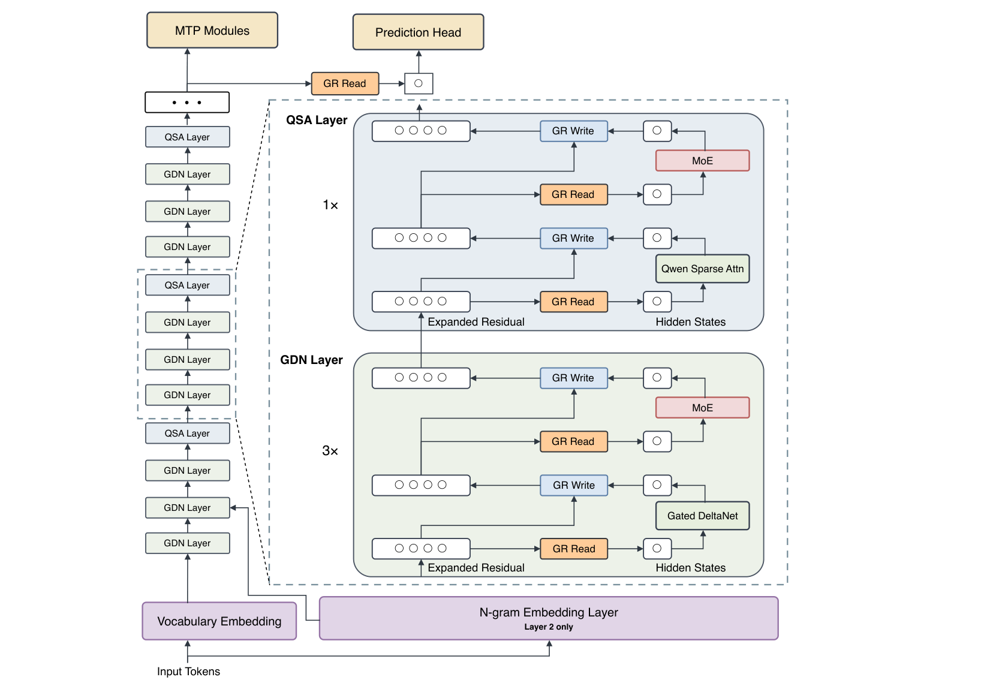
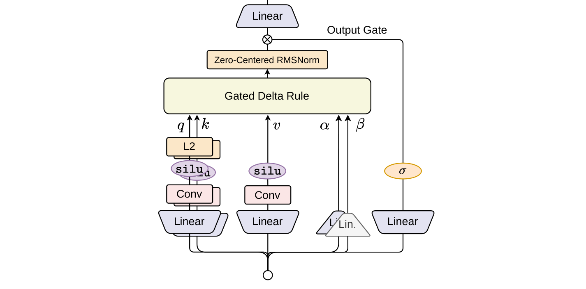
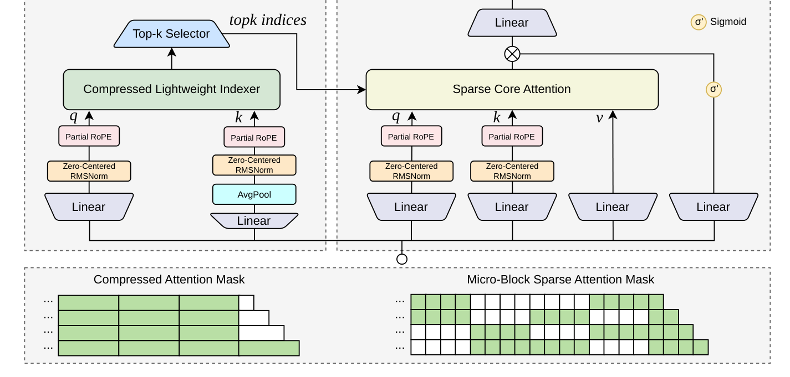
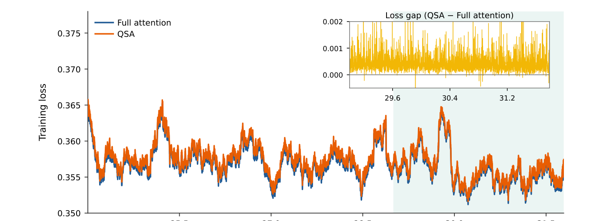
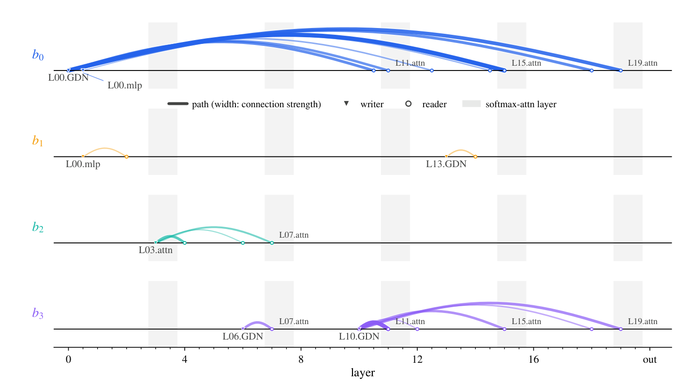
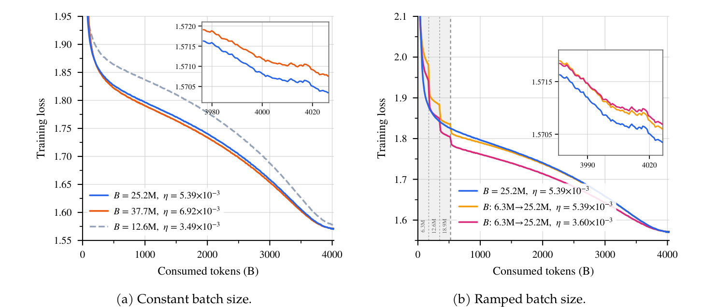
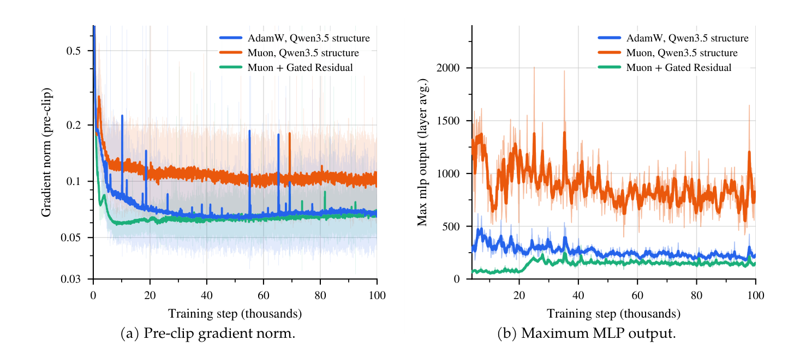

Qwen团队发布28页技术报告《On the Design of Qwen3.8-Next Architecture：Evaluation, Efficiency, and Training Stability》，完整记录Qwen3.8-Flash-Next的架构设计与逐项消融。
一句话结论：在14项预训练基准上领先前代397B-A17B旗舰8项、其余最多落后2.6分：只激活1/3参数、用1/3训练token、约1/9训练FLOPs。
Qwen3.8-Flash-Next是稀疏MoE：125B总参数、每token激活6B，外加放在加速器外的51B n-gram嵌入表（host内存预取）。

Token mixing用Gated DeltaNet（GDN）与全局注意力逐层混合：每4层有1层全注意力；继续预训练时这些层被QSA取代。
残差流加宽到四分支 + 逐元素门读，称Gated Residual（GR）：加宽注入表达力、门控提供重缩放并显著改善稳定性。
n-gram嵌入层（Layer 2）在骨干之外加容量：表从host内存预取，把容量标度放到加速器外。
MTP模块跨投机解码步复用QSA索引。
GDN mixer结构：查询/键/值流先过短因果卷积；查询与键在门控delta递归前做L2归一化（Zero-Centered RMSNorm）。衰减门 α_t与写入门 β_t参数化Delta Rule：write strength与decay来自门控。

每个子层读出经GR、再进MoE；归一化用zero-centered RMSNorm。
Kernel效率：用FlashQLA（基于TileLang的融合线性注意力核库）优化GDN核：NVIDIA GPU上相对FLA Triton核获得2–3× 前向、约2× 反向加速（实现见github.com/QwenLM/FlashQLA）。
架构消融：28层25B-A3B MoE上对比三种checkpoint：全注意力、SWA混合、GDN混合（两者每4层1全注意力，SWA窗128）。用同一评测管线，三方案9基准平均成绩见下：
| 架构 | MMLU | MMLU-Pro | SuperGPQA | MATH | GSM8K | BBH | MMMLU | EvalPlus | MultiPL-E | Avg. |
|---|---|---|---|---|---|---|---|---|---|---|
| Full attention | 62.65 | 37.59 | 21.76 | 49.40 | 75.13 | 63.78 | 47.74 | 51.01 | 39.73 | 49.87 |
| SWA hybrid | 66.30 | 40.67 | 22.45 | 45.48 | 74.22 | 65.88 | 51.33 | 52.12 | 41.93 | 51.15 |
| GDN hybrid | 66.26 | 42.82 | 23.45 | 53.98 | 77.07 | 68.72 | 54.83 | 49.71 | 47.48 | 53.81 |
动机：选择性关注相关上下文。QSA用压缩轻量索引器在微块粒度给上下文打分。

索引器流程：对query经线性+zero-centered RMSNorm+部分RoPE压缩，Sigmoid→Sparse Core Attention；对key做MaxPool对齐到块级索引分数，保token级显著信号；经Top-k Selector选出要关注的key块；用AvgPool+Linear产压缩注意力掩码（Compressed Attention Mask）。
长上下文能力：Table 3里QSA在 >256K的RULER/MRCR段反超全注意力：长上下文检索优势：
Table 2泛化能力：QSA相对全注意力8项基准平均更高（Avg 76.8 vs 75.9），在MMLU-Pro(73.7)、MATH(71.6)、GSM8K(92.2)、BBH(91.6)、EvalPlus(72.3)、MultiPL-E(79.8) 全面领先：

| 方法 | RULER ≤128K | 128–256K | 256–512K | 512K–1M | MRCR 128K | 256K | 512K | 1M | Avg. |
|---|---|---|---|---|---|---|---|---|---|
| Full Attn | 99.84 | 99.81 | 97.65 | 90.08 | 97.14 | 94.20 | 30.66 | 20.71 | 78.76 |
| w/ QSA | 99.89 | 99.62 | 98.95 | 93.00 | 95.98 | 93.00 | 40.53 | 26.44 | 80.93 |
训练loss gap：QSA与full attention的训练loss全程几乎无gap（见fig04）。
推理效率：QSA相对GQA在prefill/decode延迟上有显著优势（indexer 3.8×–4.4×、attention 4.9×–7.6× latency节省），见原报告fig06。
| 方法 | MMLU-Pro | SuperGPQA | MATH | GSM8K | BBH | MMMLU | EvalPlus | MultiPL-E | Avg. |
|---|---|---|---|---|---|---|---|---|---|
| Full Attn | 72.9 | 51.7 | 69.8 | 91.0 | 90.4 | 81.8 | 70.8 | 78.4 | 75.9 |
| w/ QSA | 73.7 | 52.1 | 71.6 | 92.2 | 91.6 | 81.1 | 72.3 | 79.8 | 76.8 |
GR门控形式：`GatedNorm(u) = RMSNorm(u) ⊙ σ(W2·SiLU(W1·RMSNorm(u)))`：先独立归一化每个分支、再用门控加权组合（unvec σ(Wu·SiLU(...)) ⊙ Σ G_i·R_i）。
残差流加宽到n_r=4分支；关键消融（Table 5，25B-A3B、560B tokens）：mHC（static）loss 1.596】低于pre-norm的1.617，且下游8项平均更高。
残差读写权重可从残差状态预测（XW/XW形式）：只带来微小loss改善、却有明显benchmark增益（§2.2）。
但有限制：把每block限制到两个最高门控的残差分支在预训练loss上几乎免费、却随继续训练显著退化（§2.2）：所以GR保留全4分支。
从全注意力层移除位置编码：预训练中不可区分、但后期影响生成质量（§2.1.1）：保留。
单层n-gram嵌入层（放Layer 2附近）、51B参数表放在加速器外，推理时从host内存预取相关slot。

消融：放大n-gram词表让loss单调下降、但下游准确率饱和；在固定参数预算下loss最优点与accuracy最优点分歧（Tab 8/9）。
这体现报告的核心理念：loss与下游bench不总同向，每个设计都沿三轴评估。
Muon优化器 + Gated Residual：Muon相对AdamW需要正交化处理（Orthogonalization需高效实现）。两者叠加把最优学习率与batch size上移、让batch-size warmup不再必要。

优化器消融：`AdamW, Qwen3.5结构` vs `Muon, Qwen3.5结构` vs `Muon + Gated Residual`，在梯度范数、max MLP输出、残差激活max上，Muon+GR明显更稳。压力测试把学习率固定在其最优值的倍数（2×、3×、4×），不走样的范围内不稳定在适中预算浮现：Muon+GR最强。
超参标度：学习率预测在更大的48× 运行上验证。`B=25.2M, η=5.39×10⁻³`（常量batch）对比ramped batch（6.3M→25.2M）：Muon+GR下恒定batch即为最优，warmup白耗优化步。
综合稳定性：Qwen3.8-Flash-Next相对Qwen3.5+Muon / Qwen3.5+GR+Muon，在training loss、梯度范数、残差激活max全程更优。
评估Qwen3.8-Flash-Next-Base对强base模型，覆盖通用/推理/数学/科学/代码/多语言6类14基准：

通用：MMLU(5-shot)、MMLU-Pro(5-shot CoT)、MMLU-Redux、BBH(3-shot CoT)、SuperGPQA(5-shot CoT)
数学与STEM：GPQA(5-shot CoT)、GSM8K(4-shot CoT)、MATH(4-shot CoT)
代码：EvalPlus、MultiPL-E、SWEBench-Pretrain
多语言：MGSM、MMMLU、INCLUDE
核心结论：相比397B-A17B前代领先8项、落后最多2.6分，在1/3激活参数、1/3训练token、约1/9训练FLOPs前提下。
设计信念：架构、效率、优化是一套耦合系统。GR的重缩放显著改善训练稳定性，这稳定余量把最优LR/batch上移、同时改进吞吐与收敛。
逐阶段成本核算把稀疏注意力设计导向索引器、把门控残差表达力集中在读侧。移除任一轴会引入看似无害的捷径（稀疏写入后期退化、位置编码预训练中看似可省、batch warmup白耗步）。
每个论断都在「完整评估预算仍可处理」的规模验证、设置专门暴露生产训练故障模式（压力测试固定LR最优倍数）。预训练指标同意与分歧之处都被记录：这正是recipe同时更高效、更强、更稳的原因。
参考：https://raw.githubusercontent.com/QwenLM/Qwen3.8-Flash-Next/main/tech_report.pdf